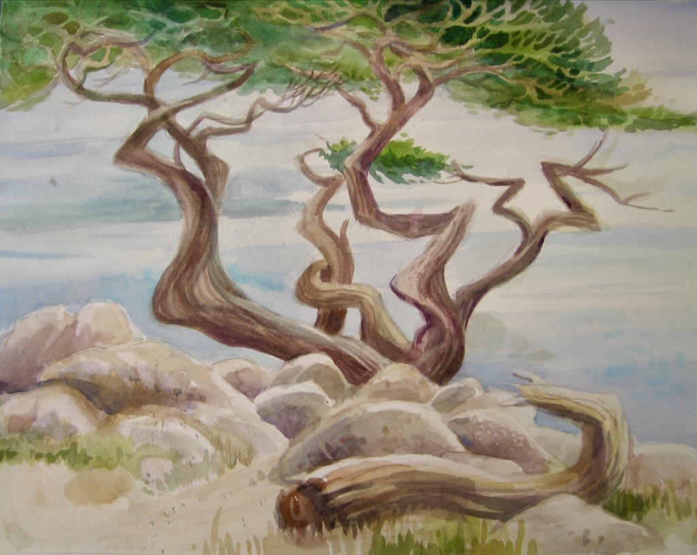

1984 Art Journal
- Artist: Patricia Ford Crass (American, 1923–2024)
- Date: 1984
- Medium: Watercolor and ink on paper (bound sketchbook journal)
- Subject: Studies from life, landscapes, and workshop exercises
- Context: Created during a period of intensive Bay Area study, including live-model and landscape classes at Jade Fon's watercolor workshop at the Asilomar in Pacific Grove on July 15-25, 1984. Other artist included Millard Sheets and Tom Nicholas,
- Collection: Family private collection
Journal & Artistic Notes
Throughout the 1980s, Patricia Ford Crass kept illustrated art journals filled with on-location watercolor studies, sketches, and handwritten reflections on composition and technique. Created in 1984—the same year she studied including live-model and landscape painting with Jade Fon at the Asilomar in Pacific Grove—this journal remains in the family's private collection.
